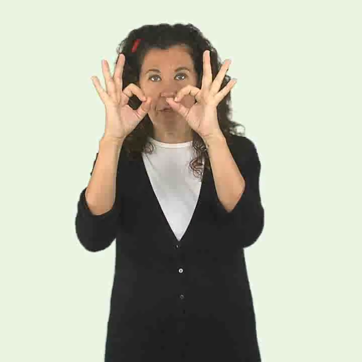
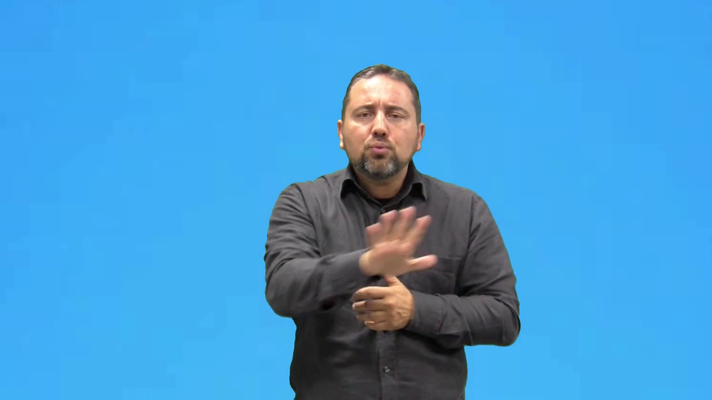
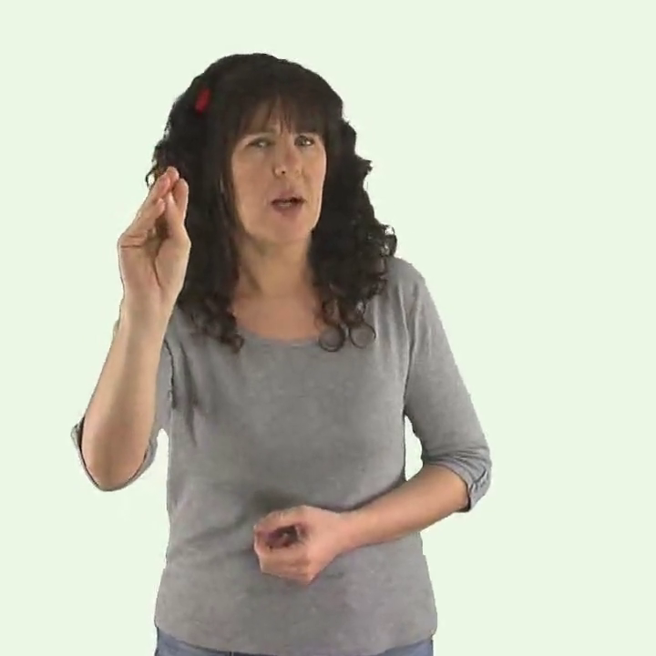
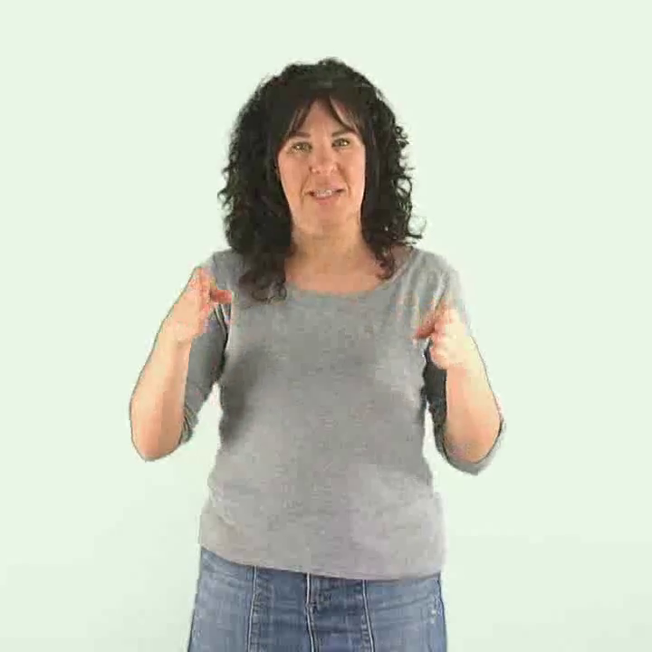
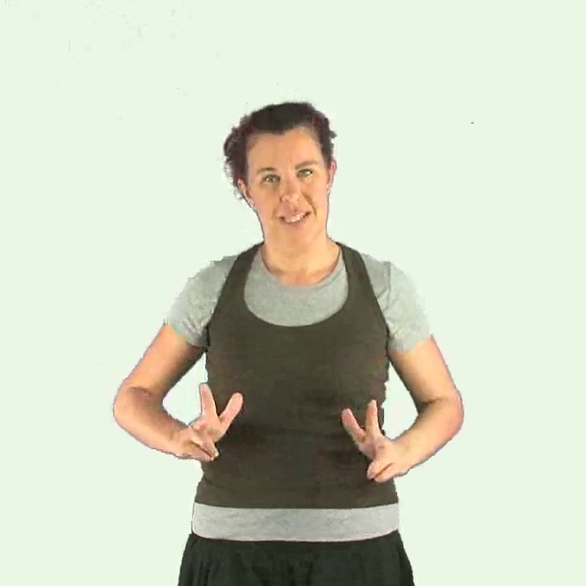

Signes escolars
Tria una paraula per a veure el signe en gran.

Atenció Esperar Ajudar
Silenci
Preguntar Llegir Escriure a mà Gràcies Llapis Paper
Taula
CadiraTria una paraula per a veure el signe en gran.

Atenció Esperar Ajudar
Silenci
Preguntar Llegir Escriure a mà Gràcies Llapis Paper
Taula
Cadira